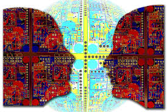

Artificial Intelligence
links
Applications of AI
AI or artificial intelligence is the simulation of human intelligence processes by machines, especially computer systems. These processes include learning, reasoning and self-correction. Some of the applications of AI include expert systems, speech recognition and machine vision. Artificial Intelligence is advancing dramatically. It is already transforming our world socially, economically and politically.
AI was coined by John McCarthy, an American computer scientist, in 1956 at The Dartmouth Conference where the discipline was born. Today, it is an umbrella term that encompasses everything from robotic process automation to actual robotics. AI can perform tasks such as identifying patterns in the data more efficiently than humans, enabling businesses to gain more insight out of their data. With the help from AI, massive amounts of data can be analyzed to map poverty and climate change, automate agricultural practices and irrigation, individualize healthcare and learning, predict consumption patterns, streamline energy-usage and waste-management.

Types of Artificial Intelligence:
Artificial Intelligence can be classified in several ways. The first classifies the AI as either weak AI or strong AI. Weak AI also known as narrow AI, is an AI system that is designed and trained for a specific type of task. Strong AI, also known as artificial general intelligence, is an AI system with generalized human cognitive abilities so that when presented with an unfamiliar task, it has enough intelligence to find a solution. The Turing Test, developed by mathematician Alan Turing in 1950, is a method used to determine if a computer can think like a human, although the method is controversial. The second example is from Arend Hintze, an assistant professor of integrative biology and computer science and engineering at Michigan State University. He categorized AI into four types, and these were as follow:
Type 1: Reactive Machines. An example is Deep Blue, an IBM chess program that can identify pieces on the chess board and can make predictions accordingly. But the major fault with this is that it has no memory and cannot use past experiences to inform future ones. It also analyzes possible moves of its own and its opponents. Deep Blue and AlphaGO were designed for narrow purposes and cannot easily be applied to any other situation.
Type2: Limited Memory. These AI systems can use past experiences to inform future decisions. Most of the decision-making functions in the autonomous vehicles have been designed in this way.
Type 3: Theory of mind: This is a psychology term, which refers to the understanding that the other have in their own beliefs and intentions that impact the decisions they make. At present this kind of artificial intelligence does not exist.
Type4: Self-awareness. In this category, AI systems have a sense of self, have consciousness. Machines with self-awareness understand their current state and can use the information to infer what others are feeling. This type of AI does not yet exist.
What Comprises to Artificial Intelligence?
Artificial Intelligence is not just a part of computer science even it's so vast and requires lots of other factors which can contribute to it. To create the AI first we should know that how intelligence is composed, so the Intelligence is an intangible part of our brain which is a combination of Reasoning, learning, problem-solving perception, language understanding, etc.
To achieve the above factors for a machine or software Artificial Intelligence requires the following discipline:
Mathematics
Biology
Psychology
Sociology
Computer Science
Neurons Study
Statistics